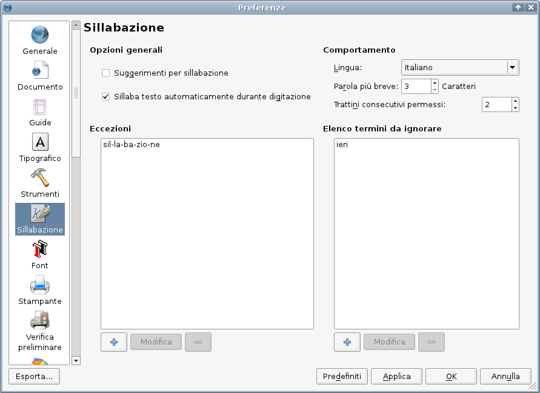
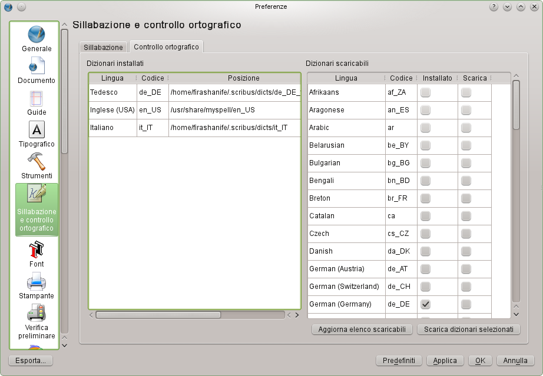
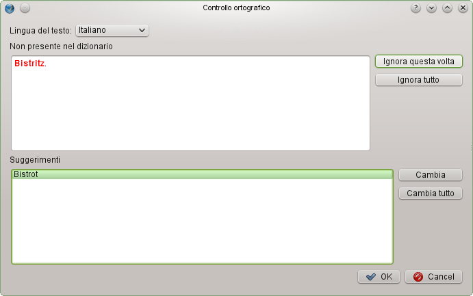

Una delle cause che possono dare al testo un aspetto sgradevole e antiestetico sono i “buchi” tra le parole, che a loro volta sono la conseguenza della mancanza di sillabazioni nel testo. In generale, più una riga di testo è corta, più è probabile che contenga “buchi”. Per questo è caldamente consigliabile usare la sillabazione per il testo continuo.
Per ottenere i migliori risultati con la sillabazione, dovreste configurare adeguatamente questa funzione. Lo si può fare in File > Impostazioni documento > Sillabazione per il documento attuale e in File > Preferenze > Sillabazione per i nuovi documenti.
|  |
La finestra di dialogo comprende quattro parti. Nella parte in alto a sinistra (Opzioni generali) potete stabilire il comportamento generale per la sillabazione:
In alto a destra sono presenti le opzioni più importanti dal punto di vista tipografico, e cioè:
I due riquadri inferiori permettono di inserire parole da trattare in modo diverso rispetto a quanto fa la sillabazione automatica. Il riquadro a sinistra (Eccezioni) permette di inserire singole parole che in automatico non vengono sillabate correttamente. Per ciascuna parola si può indicare la sillabazione corretta con trattini (ad esempio: “sil-la-ba-zio-ne”) e questa sarà applicata da Scribus.
Il riquadro a destra ha titolo Elenco termini da ignorare. Le parole inserite in questo riquadro non saranno mai sillabate.
Selezionate una cornice di testo, impostate il tipo di allineamento che preferite, e poi selezionate Utilità > Testo sillabato nel menù. La sillabazione viene applicata soltanto al testo nella cornice selezionata.
Nel menù Utilità si trova anche la funzione opposta: Togli sillabazione. È utilizzabile per eliminare la sillabazione dal testo nella cornice selezionata, ma può essere applicata anche a una singola parola: basta selezionare la parola interessata e poi usare il comando nel menù.
L'algoritmo di sillabazione non è in grado di individuare ogni possibile o ragionevole sillabazione. Per rimediare, potete inserire in determinate parole dei trattini di sillabazione opzionali. In sostanza essi dicono al programma: “Dividi le sillabe qui, se possibile”, dove “possibile” significa che la sillabazione non è impedita da altre impostazioni, come inserire manualmente dei trattini di sillabazione opzionali. Per inserire un trattino di sillabazione opzionale dovete posizionare il cursore nel punto in cui la parola deve essere spezzata e poi dare il comando Inserisci > Carattere > Sillabazione manuale.
Per il controllo ortografico Scribus usa la libreria Hunspell, che è utilizzata anche da altri programmi molto diffusi come LibreOffice, Firefox o InDesign.
In File > Preferenze > Sillabazione e controllo ortografico si trova una seconda scheda chiamata “Controllo ortografico”. Questa scheda serve per configurare non le opzioni del controllo ortografico, ma la gestione dei dizionari disponibili.
|  |
Se avete già installato un programma che usa Hunspell, come ad esempio LibreOffice, Scribus tenta di rilevare i dizionari installati e di utilizzarli. I dizionari installati sono elencati nella colonna sinistra della scheda, che mostra anche la loro posizione. Per poter utilizzare la colonna di destra dovete avere una connessione a internet, perché Scribus scarica un elenco dei dizionari disponibili nel repository freedesktop.org di LibreOffice. Potete selezionare uno o più dizionari da scaricare. Questi dizionari vengono salvati nella vostra directory utente o nel suo equivalente, nella sottodirectory .scribus/dicts, quindi gli altri programmi non li possono utilizzare, a meno che non li copiate nelle rispettive directory di sistema o di programma.
Il controllo ortografico lavora cornice per cornice, quindi, come per la sillabazione, dovete selezionare una cornice di testo prima che Scribus possa controllare la presenza di errori. Il controllo si avvia da “Elemento > Controllo ortografico”. Una importante differenza tra la sillabazione e il controllo ortografico è che non potete impostare una lingua predefinita; Scribus utilizza le impostazioni di sistema per la lingua. Se volete usare una lingua diversa, dovete creare un nuovo stile di carattere. Come potete vedere sotto, nella finestra di dialogo del controllo ortografico c'è un menù per la selezione della lingua, ma la scelta funziona solo per la parola indicata, e poi torna alla lingua dello stile di carattere in uso. Le altre funzioni non dovrebbero aver bisogno di spiegazione.
|  |